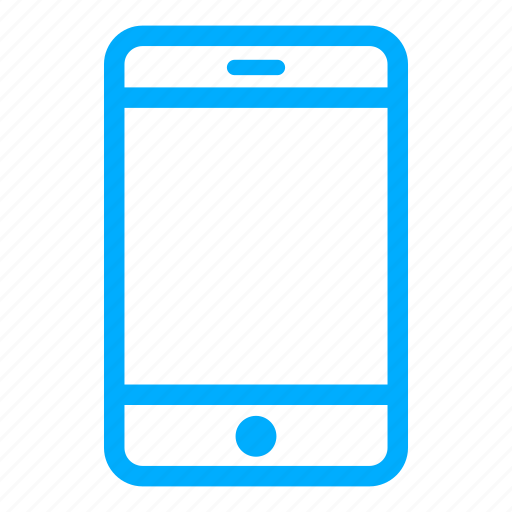

FEATURED | view all featured media
RESPONSIVE WEB DESIGN

approach that suggests that design and development should respond to the user's behavior and environment based on screen size, platform and orientation.
APP DEVELOPMENT
Mobile application development is the process of making or creating a mobile application to run on various mobile platforms. A mobile platform is a mobile operating system.